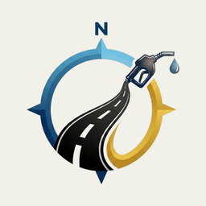
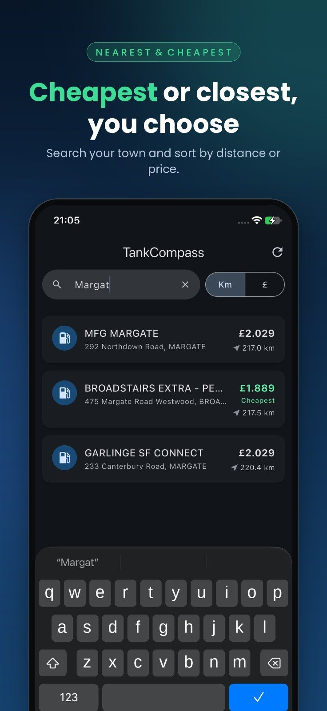
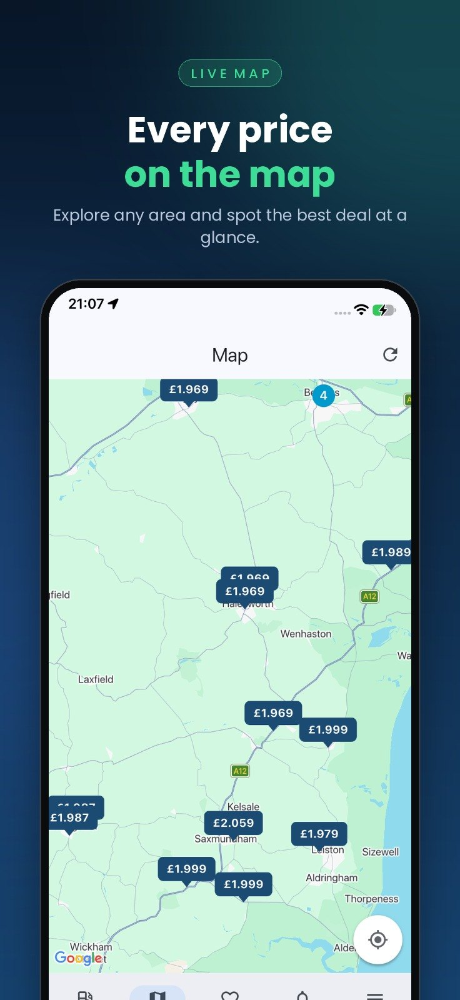
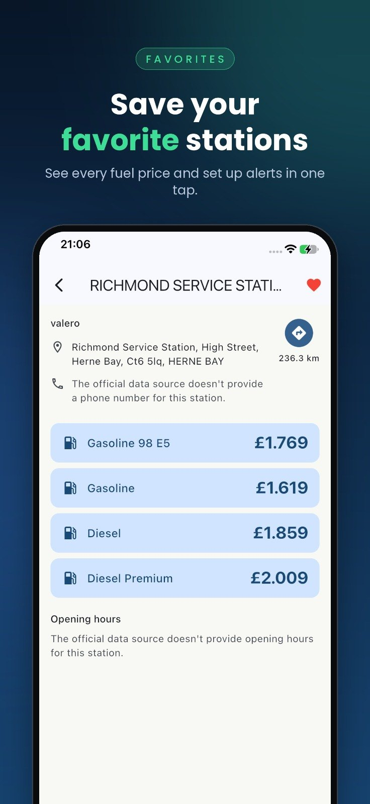
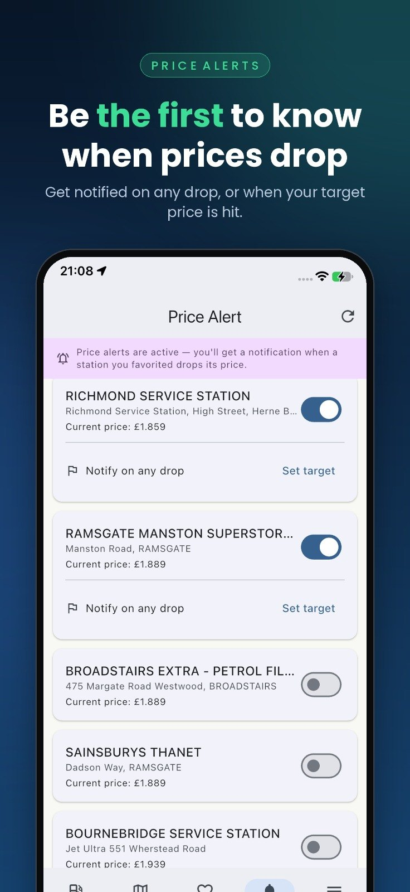
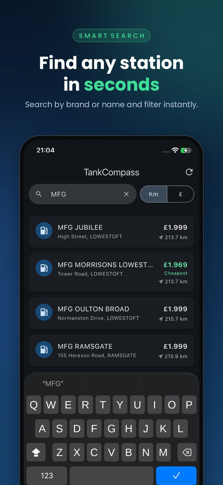
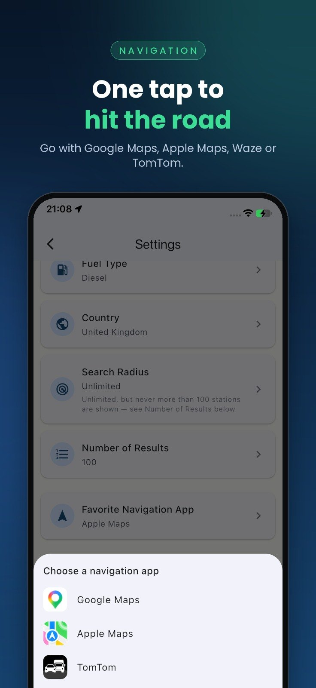

TankCompass lists the fuel stations around you, sorted by distance or by price, so you can see at a glance where to fill up for less. Petrol, diesel, LPG and every other fuel a station actually sells.
Prices come straight from official open data, refreshed through the day. Pick a station and your favorite navigation app takes you there.
- Spain
- Italy
- United Kingdom
- Denmark
- France
- Nearby stations sorted by distance or by price, with the cheapest one highlighted
- A map with a price tag on every station
- Station details: address, opening hours and the price of every fuel sold there
- Directions in Google Maps, Apple Maps, Waze or TomTom
- Favorites, and optional alerts when a favorite station lowers its price
- Search by brand or address
- Six languages: English, Turkish, Spanish, Italian, Danish and French
- No account and no sign-up. Free, supported by ads






Where the prices come from
Every price in TankCompass comes from an official open-data source, published under each country's price-reporting rules:
- Spain: Geoportal Gasolineras, Ministry for the Ecological Transition (MITECO)
- Spain: MITECO fuel-price web service
- Italy: Osservaprezzi Carburanti, Ministry of Enterprises and Made in Italy (MIMIT)
- United Kingdom: Fuel Finder, Department for Energy Security and Net Zero (DESNZ)
- Denmark: Fuel retailers' public price APIs, required by the Konkurrence- og Forbrugerstyrelsen (KFST)
- France: prix-carburants, French government open data
TankCompass is an independent app. It is not affiliated with, endorsed by, or operated by any government entity, ministry or public authority.